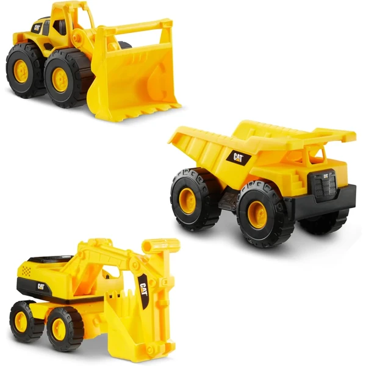
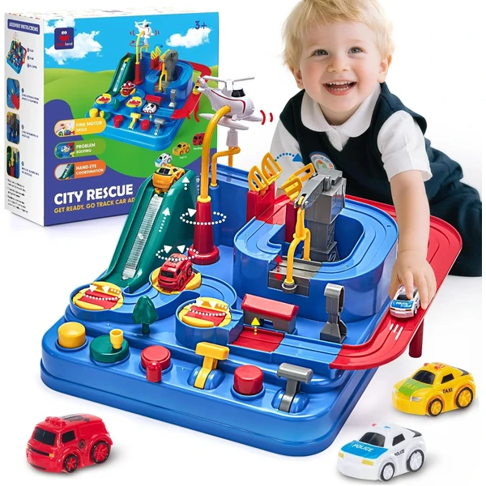
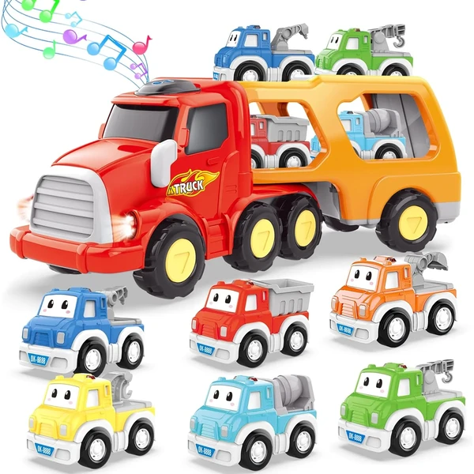
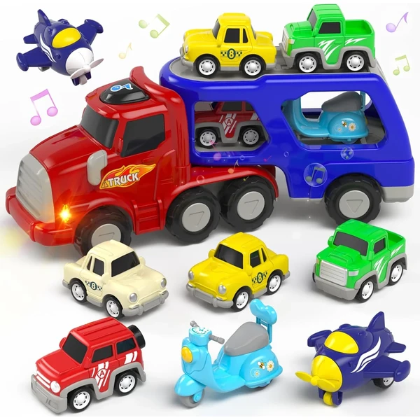
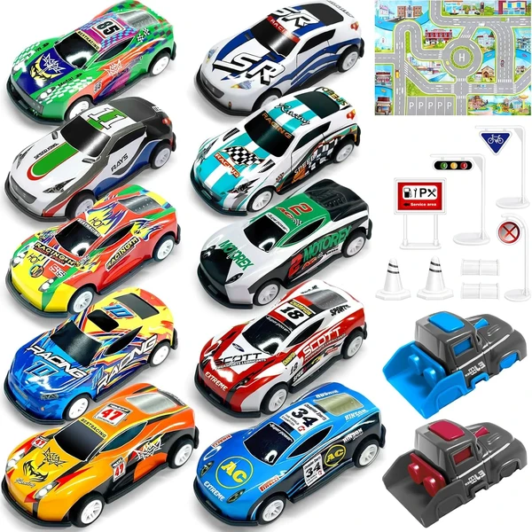

Set 3 vehículos de construcción CAT
Un set de tres vehículos de construcción CAT en miniatura (volquete, pala cargadora y excavadora) con piezas articuladas para imitar el movimiento real de la maquinaria.
⭐ ¿Por qué nos gusta?
- ✔ Tres vehículos con piezas articuladas.
- ✔ Aptos para interior y exterior.
- ✔ Licencia oficial CAT.
💬 Lo que más destacan las familias
Lo que más suele gustar es lo realistas que resultan los movimientos de las piezas articuladas, que imitan a la maquinaria real. Los niños suelen pasar mucho rato empujándolos y haciendo que carguen y descarguen tierra.
Ver en Amazon

Set 18 vehículos urbanos JOYIN
Un set de dieciocho vehículos urbanos a fricción (bomberos, policía, autobús escolar...), sin necesidad de pilas, pensado para repartir entre varios niños.
⭐ ¿Por qué nos gusta?
- ✔ Dieciocho vehículos con diseños distintos.
- ✔ Funcionan a fricción, sin pilas.
- ✔ Plástico resistente sin bordes afilados.
💬 Lo que más destacan las familias
Muchos padres coinciden en que da mucho juego tener tantos vehículos distintos, sobre todo si hay más de un niño en casa. También se valora que funcionen a fricción, sin depender de pilas que haya que cambiar.
Ver en Amazon

Circuito de coches con botones hahaland
Una pista con seis botones de colores para guiar tres mini coches (policía, ambulancia, bomberos) a través de ocho retos, sin necesidad de pilas.
⭐ ¿Por qué nos gusta?
- ✔ Seis botones de colores para guiar los coches.
- ✔ Incluye tres mini vehículos.
- ✔ No necesita pilas.
💬 Lo que más destacan las familias
Una de las cosas más comentadas es lo entretenido que resulta pulsar los botones para guiar los coches por la pista, algo que mantiene la atención del niño más tiempo del esperado. También gusta que no dependa de pilas para funcionar.
Ver en Amazon

Camión transportador 7 en 1 con música
Un camión grande que transporta seis mini vehículos en su interior, con luces y música al pulsar un botón. Se puede separar la cabina del remolque para cargar y descargar los coches pequeños.
⭐ ¿Por qué nos gusta?
- ✔ Incluye seis mini vehículos dentro.
- ✔ Luces y música al pulsar el botón.
- ✔ Se puede separar cabina y remolque.
💬 Lo que más destacan las familias
Los compradores valoran especialmente que se pueda separar la cabina del remolque para cargar y descargar los coches una y otra vez. Las luces y la música al pulsar el botón también suelen ser un acierto seguro con los más pequeños.
Ver en Amazon

Camión transportador 7 en 1 con avión y moto
Otro camión transportador con luces y música, esta vez con una selección más variada de vehículos (coches, avión y moto) en vez de solo coches.
⭐ ¿Por qué nos gusta?
- ✔ Incluye avión y moto además de coches.
- ✔ Luces y música al pulsar el botón.
- ✔ Colores variados para aprender colores.
💬 Lo que más destacan las familias
Entre los comentarios más habituales aparece que gusta tener variedad de vehículos más allá de los coches, como el avión o la moto. También se valora que los colores llamativos ayuden a que el niño los vaya reconociendo y nombrando.
Ver en Amazon

Set 10 mini coches con lanzador TOYABI
Un set de diez coches de metal a fricción con dos lanzadores, ocho obstáculos y una alfombrilla de juego, pensado para organizar carreras.
⭐ ¿Por qué nos gusta?
- ✔ Diez coches de metal, resistentes.
- ✔ Dos lanzadores para organizar carreras.
- ✔ Incluye alfombrilla y bolsa de almacenaje.
💬 Lo que más destacan las familias
No es raro encontrar comentarios sobre lo bien que funcionan los lanzadores para organizar pequeñas carreras en casa. También se valora que los coches sean de metal, más resistentes que los de plástico tras un uso intensivo.
Ver en Amazon